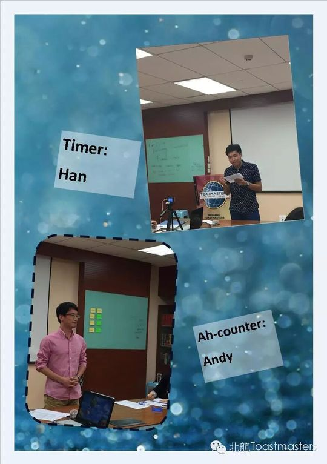
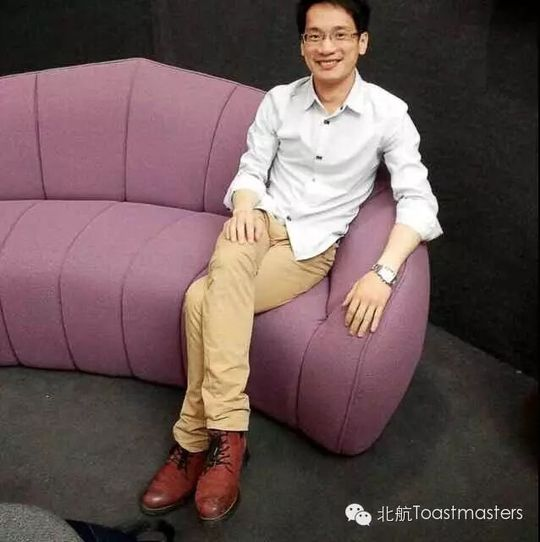
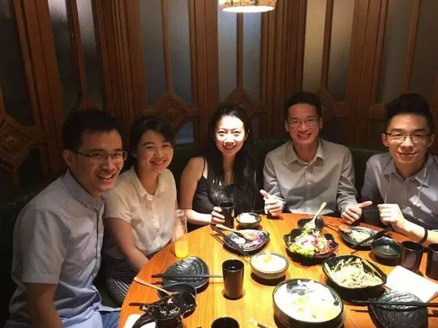
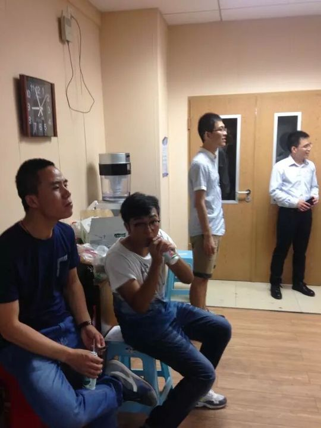
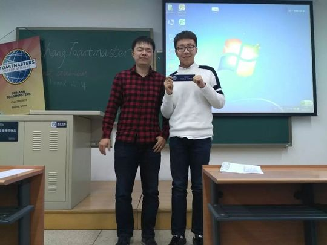
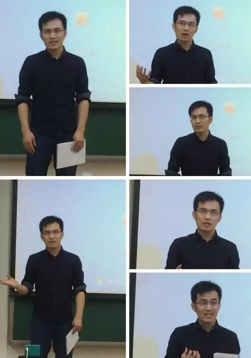

Andy
Andy 是一位来自温州、求学于北航的博士生（club 里常以"医生""博士"相称）。他与头马的缘分始于杭州——来北京前就在杭州接触过 Toastmasters，所以走进北航头马时并不陌生。第一次落座，会员们主动打招呼、问候，让他觉得很温馨；但又因觉得"这里大神很多、自己英语太菜"而害羞，时隔半年多才来第二次。2015 年 10 月，他正式成为北航头马 member，并坦言加入的"正经理由"是这里给了他在犹豫彷徨时的鼓励与推力，让他敢于跨出第一步。
2015 年 10 月，Andy 在第 113 次会议完成破冰演讲 CC1《The Way I Went》，从美丽的西子湖畔与温州讲起，分享他一路走来、仍要继续前行的人生之路。此后他稳步走在 CC 路上：CC2《Couch Surfers》分享作为"沙发之友"的旅行哲学，CC3《Big Brother And Little Sister》谈兄妹/角色之情，CC6 则先后呈现《To Be or Not to Be》与《Letters》——后者回忆中学时代与笔友通信的往事，带着他一贯的温柔、聪慧、成熟与幽默，让人很容易被打动。纪要里同伴打趣他"故事总是有点 sad"，却也总能被他的细腻所触动。
除了备稿演讲，Andy 也乐于服务俱乐部：2016 年春季比赛（第 128 次会议）他担任中文演讲比赛的 Contest Chair；在第 161 次会议中与 Wendy 搭档完成即兴对话；并在多次会议中参与即兴演讲环节。他在中文幽默上颇有天赋——2016 年秋季比赛后的小区赛中，Andy 夺得小区中文幽默比赛第三名。
在北航头马三周年晚会上，Andy 以"劝君更尽一杯酒，西出阳关无故人"作别，为这段共同的岁月留下温润的句点。他曾说，希望北航头马伴他到毕业，再回头看曾经的自己——这份对成长的期待，正是他作为头马人的底色。
完整足迹 · 17 次出现（点开，每条可跳转原文）
- 2015-10-09第113次 · 会议预告：将做CC1破冰演讲《The Way I Went》
- 2015-10-14第113次 · 做CC1破冰演讲《The Way I Went》，介绍家乡温州
- 2015-10-19作为新会员接受Kiki(K记者)访谈
- 2015-11-11第118次 · 会议预告：将做CC2演讲《Couch Surfers》
- 2015-11-17第118次 · 做CC2备稿演讲《Couch Surfers》
- 2016-02-25第126次 · 预告备稿演讲Big Brother And Little Sister (CC3)
- 2016-03-10第128次 · 担任春季比赛中文背稿演讲Contest Chair
- 2016-06-27在三周年趴上告别
- 2016-08-18第149次 · 做关于缘分的备稿演讲
- 2016-09-05夺得小区中文幽默比赛第三名
- 2016-09-22第153次 · 预告做CC6演讲《To Be or Not to Be》
- 2016-09-28第153次 · 做备稿演讲《To be or not to be》
- 2016-09-29第154次 · 预告做CC6演讲
- 2016-12-04第161次 · 与Wendy搭档即兴演讲
- 2016-12-16第163次 · Resolution@BeihangTMC&AEC 163rd Meeting
- 2016-12-17第163次 · Resolution@Beihang & Ameco-TMC 163rd Mee
- 2016-12-22第163次 · Resolution@minutes of Beihang & Ameco-TM
闯关之路 · Competent Communication
做过的演讲 · 5 场
担任过的会议角色
里程碑
- 2015-10 正式成为北航头马 member ↗先前在杭州接触过头马，落座时被会员温暖问候；坦言曾因觉得自己英语太菜而隔半年多才来第二次。
- 2015-10-09 破冰首秀 CC1《The Way I Went》 ↗第113次会议完成破冰，从温州与西子湖畔讲起，迈出头马之路第一块石头。
- 2016-03-11 担任中文演讲比赛 Contest Chair ↗2016 春季比赛（第128次会议）主持中文演讲比赛环节。
- 2016-06-24 三周年晚会作别 ↗以'劝君更尽一杯酒，西出阳关无故人'在三周年晚会 Farewell 环节告别。
- 2016-09 小区中文幽默比赛第三名 ↗2016 秋季比赛后的小区赛中夺得小区中文幽默比赛第三名。
为俱乐部做的事
- 担任 2016 春季比赛（第128次会议）中文演讲比赛 Contest Chair，主持比赛环节。
- 在小区中文幽默比赛中夺得第三名，为北航头马争得荣誉。
- 持续完成 CC1–CC6 备稿演讲，以温柔幽默、善讲故事的风格丰富俱乐部舞台。
- 积极参与即兴演讲环节，并与会员搭档完成 Table Topics 对话。
头马里的人
照片墙 · 时间线
 ✓
✓ ✓
✓ ✓
✓
✓
✓ ✓
✓ ✓
✓ ✓
✓ ✓
✓
✓ ✓
✓ ✓
✓







